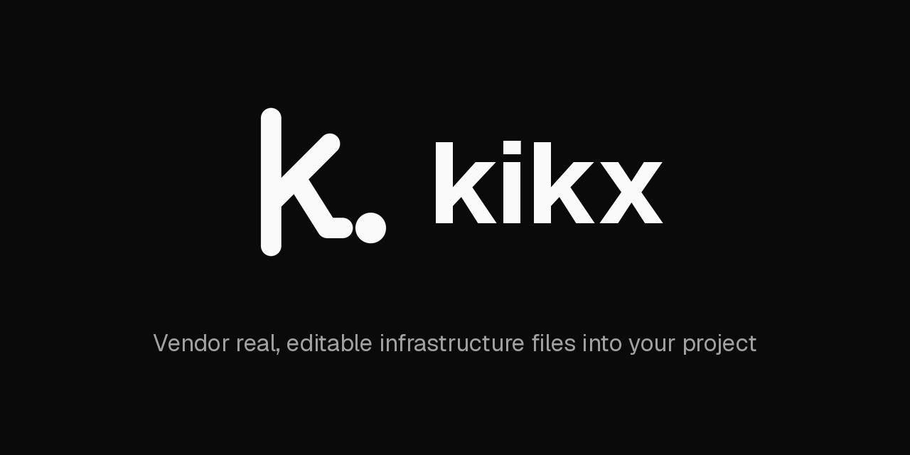
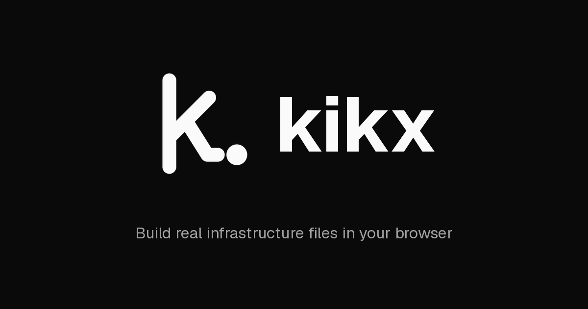
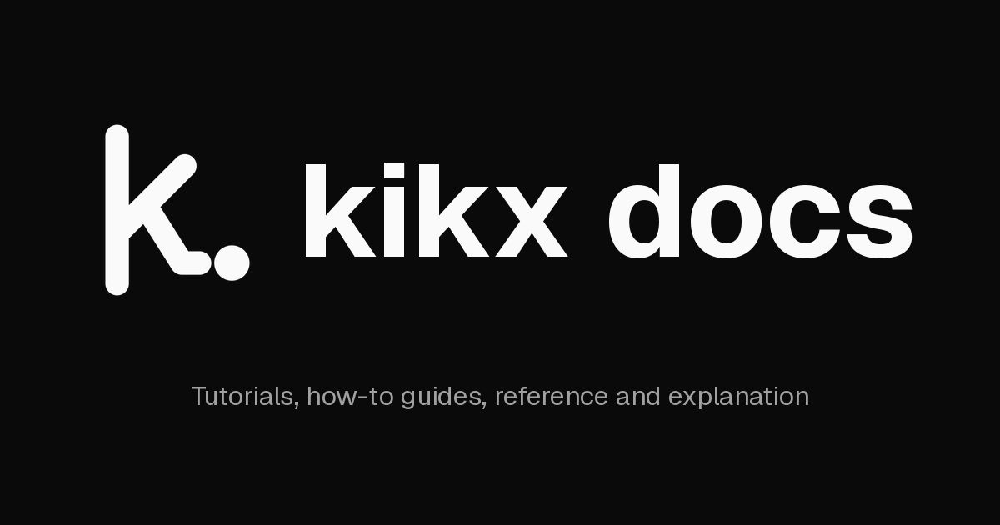

kikx vendors real, editable infrastructure files into your project. The brand is as plain as the tool: one mark, two colours, one typeface.
This guide sets the rules for using the kikx mark, wordmark, colour and type. Every measurement is taken from the master SVG files in brand/. When the two disagree, the SVG files win.
Measurements on the mark use units (u). The mark is drawn on a 128 × 128 u grid, so at 128 px one unit is one pixel. To convert, multiply by the rendered size divided by 128.
A lowercase k whose lower stroke bends into a kicking foot, with the ball just leaving it.
It reads as the first letter of the name and as the action the tool performs: kicking real files into your project. It is built from three strokes and one dot, all with round ends, so it stays clear from a 16 px browser tab to a 1280 px banner.
The mark sits on a 128 u square. Three strokes of 16 u with round caps and joins, plus a solid ball of 24 u diameter. The ink is centred on the grid in both directions.
Coordinates are the stroke centrelines in the final 128 u space. The master SVGs draw the same shapes 7 u to the right and shift them back with translate(-7 0).
x = the diameter of the ball (24 u). Keep at least x of empty space on every side of the mark's ink. Nothing else, text, edges or other logos, enters this area. At 128 px, x is 24 px.
| Asset | Screen | |
|---|---|---|
| Mark on its own | 24 px | 8 mm tall |
| App icon | 16 px | 6 mm |
| Lockup (mark + wordmark) | 20 px mark height | 6 mm mark height |
| Background | Use | Contrast |
|---|---|---|
| White #ffffff or Paper #fafafa | Black mark | 19.8 : 1 · 19.0 : 1 |
| Ink #0a0a0a or darker than #404040 | White mark | 19.0 : 1 on Ink |
| Photos, gradients, patterns, mid-greys | Do not place the bare mark. Use the app icon, or set the mark on a solid Ink or white panel. | — |
Small icons use heavier strokes so the mark holds its weight once the pixels run out. The shapes and positions never change, only the stroke and ball.
| Version | Stroke | Ball radius | Colour |
|---|---|---|---|
| Mark | 16 u | 12 u | Ink or Paper |
| App icon | 17 u | 12.5 u | Paper on Ink |
| Favicon | 18 u | 13 u | Follows system theme |
The mark's ink is as tall as the wordmark's ascenders: the top of the k to the baseline. Call this h.
Leave half the mark's ink width (½ w, about 0.42 h) between the mark and the wordmark. The ball's baseline sits on the text baseline.
Geist Bold, lowercase kikx, tracking −1.5 %. Never "Kikx" or "KIKX", never another typeface. The mark may stand alone; the wordmark does not replace it.
kikx uses #0a0a0a & #fafafa only. There is no accent colour.
Ink and Paper carry the brand. White, the two greys and Line are working colours for interfaces and documents. Do not introduce tints, gradients or a brand hue.
Roughly: white and Paper surfaces, Ink for text and marks, greys only for secondary text and dividers.
Print values are neutral, black-only builds. For large solid areas in offset print, a rich black (C40 M30 Y30 K100) can replace K96; check with your printer.
Wordmark, headings and interface text. Regular 400, Medium 500, Semibold 600, Bold 700.
Code, commands, file names, hex values and measurements.
Both are free under the SIL Open Font License, from vercel.com/font or Google Fonts.
| Display | 48 / 48 px · 600 · −2.5 % |
| Page title | 30 / 36 px · 600 · −2.5 % |
| Section heading | 18 / 28 px · 600 · −2.5 % |
| Body. Vendor real, editable infrastructure files. | 16 / 24 px · 400 |
| Interface text, buttons, form labels and tables. | 14 / 20 px · 400–500 |
| Captions, hints and metadata in Muted. | 12 / 16 px · 400 |
| Overline label | 12 / 16 px · 600 · +2.5 % · caps |
| kikx upgrade --check | Mono 14 / 20 px · 400 |



Every card uses one layout, scaled from the card's height H. Change the numbers in social.py, never by hand in an editor.
| Card | Size | Tagline |
|---|---|---|
| social | 1280 × 640 | Vendor real, editable infrastructure files into your project |
| og-web | 1200 × 630 | Build real infrastructure files in your browser |
| og-docs | 1200 × 630 | Tutorials, how-to guides, reference and explanation |
Also avoid: redrawing or re-spacing the strokes, adding a container other than the app icon's rounded square, animating parts of the mark apart, and crowding it inside the clear space.
| File | Size | Use |
|---|---|---|
| kikx-mark.svg | 128 u | Black mark, light backgrounds |
| kikx-mark-white.svg | 128 u | White mark, dark backgrounds |
| kikx-favicon.svg | 128 u | Browser icon, follows the system theme |
| kikx-app-icon.svg | 512 px | White mark on Ink rounded square |
| kikx.ico | 16–256 px | Windows icon, embedded in kikx.exe |
| png/kikx-app-icon-*.png | 16 32 48 64 128 180 192 256 512 | App icon renders |
| png/kikx-mark-*.png | 64 128 256 512 | Black and white mark renders |
| kikx-social.png | 1280 × 640 | Repository social preview |
| kikx-og-web.png | 1200 × 630 | Dashboard link preview |
| kikx-og-docs.png | 1200 × 630 | Docs link preview |
The SVG files are the masters. Everything else is generated from them. Edit a master, then regenerate; never edit a PNG.
| Dashboard | web/app, web/public |
| Docs | docs/_static |
| CLI | cli/assets/kikx.ico |
This guide is built from brand/guide/brand-guide.html. Update it with the masters.